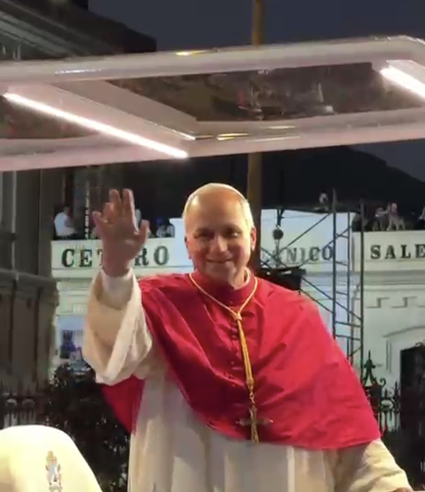
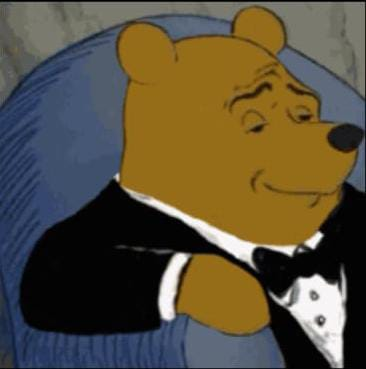
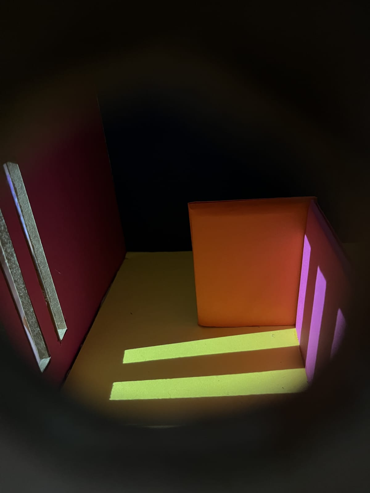
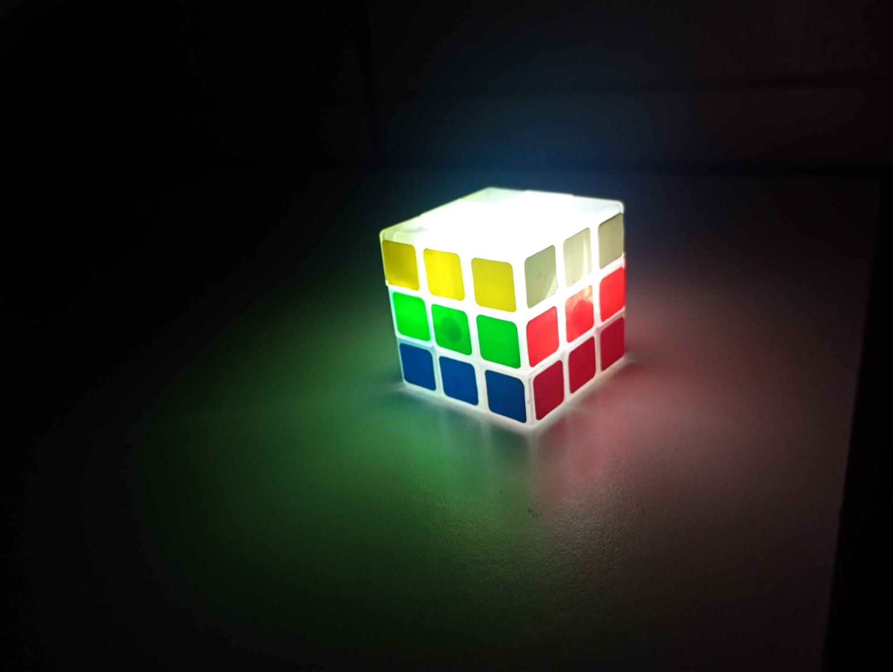
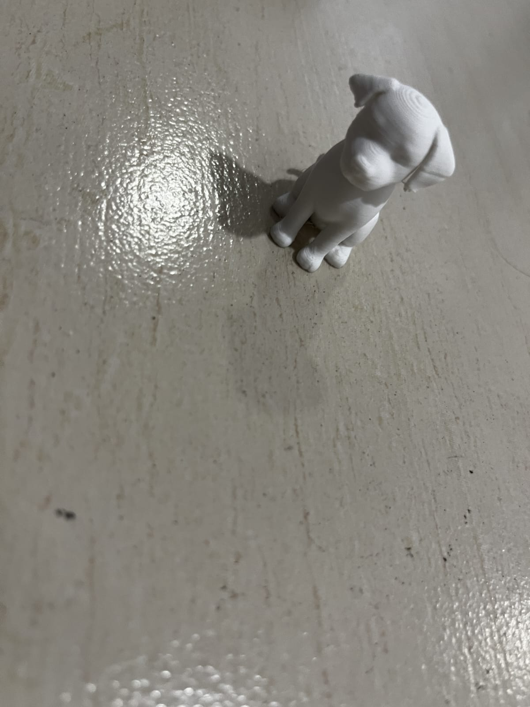
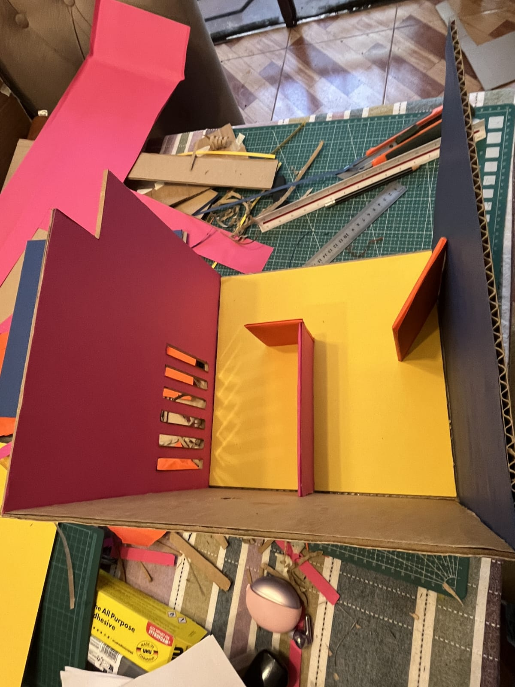
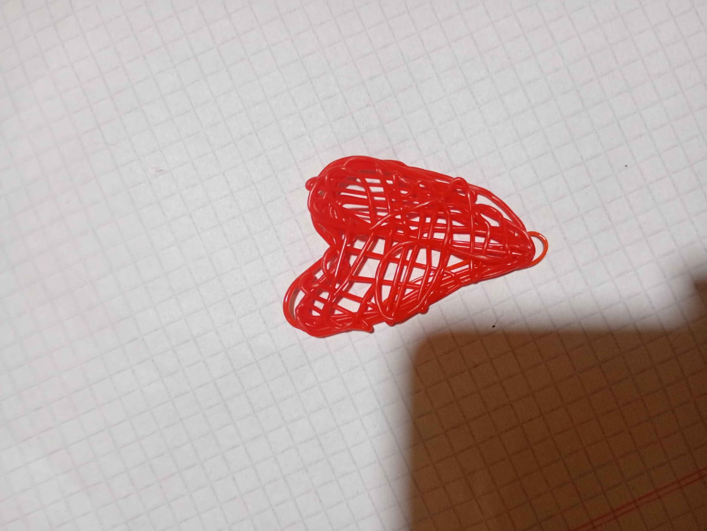
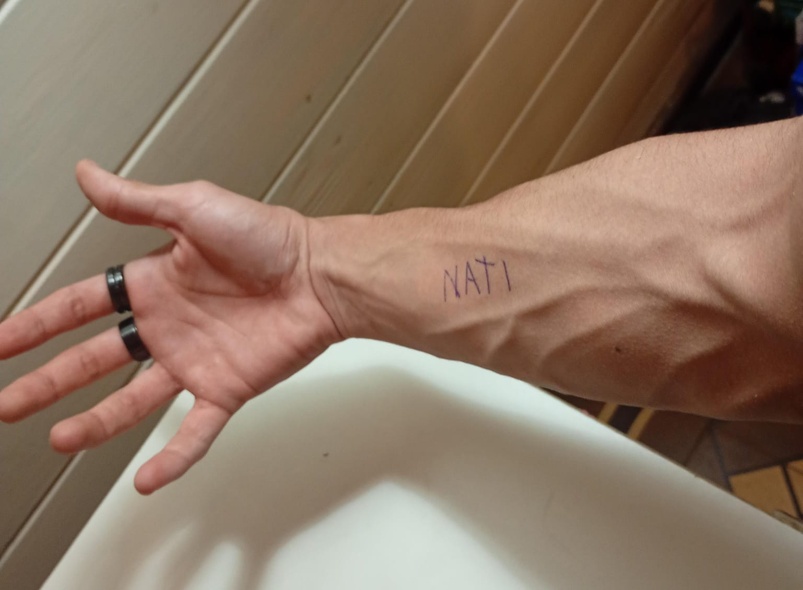

Te deseo un feliz cumpleaños mi amor
Para cuando veas esto será 7 de diciembre
y ya tendré hecha una página web que preparé
para tu cumpleaños
Ahorita mismo escribiendo esto es el 30 de octubre,
y mientras tenía insomnio a la noche recordé tu
cumpleaños y me puse a pensar qué podría hacer
siendo que solo nos conocemos en virtual
Pues no puedo hacer gran cosa, pero aprovecharé
que literalmente trabajo en virtual para hacerte
un detallie jsdjsjd
Mi idea principal al inicio era documentarte
todos los cambios que haría con este tiempo,
pero recién el 4 de noviembre que fue el segundo
día que lo edité ya era un montón de texto
y no te quería molestar haciéndote leer todo, asi k solo te deje partes de ambos dias y un texto nuevo xd
Pero weno, realmente cada vez dudo más si creas
que es un buen regalo, pero es lo único que se me
ocurre poder darte virtualmente
He estado añadiéndole estilos en base a tus colores
favs que te pregunté hace unos cuantos días,
o sea beige y morado, aunque verde ns dónde ponerlo xd
y tmb pues coloque algunas imgs en el fondo q han estado por nuestro chat pa poner nostalgia o algo asi JSAJAJSAJSA
Y pues nada, solo te quería decir que te amo
muchísimo mi princesa
Por ciertoooooooo, dato curioso: tu cumpleaños cayó el mismo dia de aniversario de q nos conocemos hace 3 meses exactos :o
Te dejo las fechas que me tomé para hacer esto:
y ps bueno, como hasta ahora no conoces nd de mi ni aun me animo a mostrarme completo me parecia buena idea mostrarte mi antebrazo que es la segunda mejor parte de mi cuerpo 👉👈

Hasta tuve que crear un nuevo Gmail para publicar en internet esta página JSDSJDAS.
Te desearia lo mejor, pero ya me tienes jsdjsjds.
Pues espero q tengas un hermoso dia, y que te sientas mi princesa